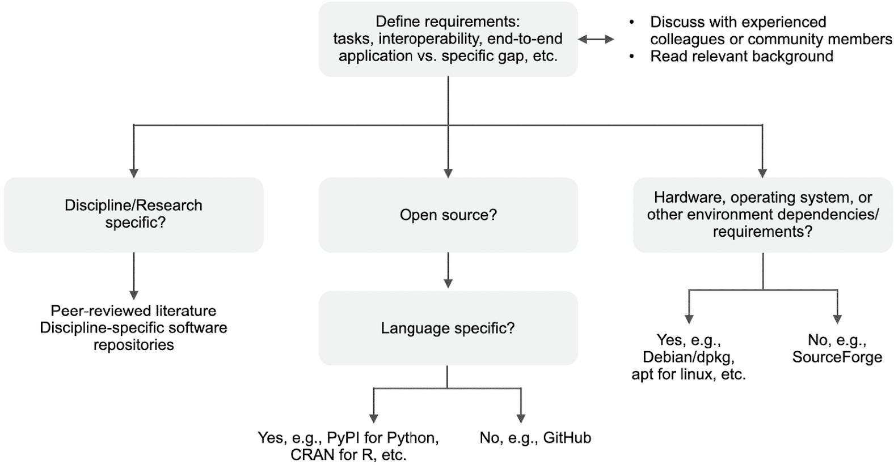

18 Lesson 2: Using Open Code
18.2 Overview
In this lesson, you learn the steps for using existing open code in your work. These steps include discovering, assessing, reusing, citing, and acknowledging.
18.3 Learning Objectives
After completing this lesson, you should be able to:
- Describe the process of using open code and list some key elements of discovering code.
- Describe the four key considerations when assessing open software: functionality, interoperability, security, and licenses.
- List some common problems that arise when reusing Open Code and best practices to resolve them.
- Describe how, where, and under what circumstances one should acknowledge (cite) code.
18.4 Discovering Open Code and Software
Many people discover code through discussions with their colleagues or by reading journal articles and attending talks at conferences. This is a great way to find out about code that might have applications for your scientific problem.
What other ways can someone search for open code? As a first step, look for code that already exists because chances are that someone else has already had a similar problem and published their code online. A common way to search for existing code is with a general search engine. Search engines offer one indicator of a code’s relevancy, how recently it was updated, and how frequently others reference it.
| Example | I’m a new graduate student starting to work on modeling turbulence in the Southern Ocean to better understand sea surface temperature (or ocean heat uptake) and climate change. Is there some software available to model how eddies in the ocean affect sea-surface temperature? |
| Exercise | General Search on the term “Software for ocean turbulence modeling” |
| Result | General Ocean Turbulence Model (GOTM) |
This successful search is predicated on the developers of GOTM making their code open.
18.4.1 Open Software Discovery Depends on Developers Following FAIR Principles
Discovering open software depends on developers making their software easy to find. The Findable, Accessible, Interoperable and Reusable (FAIR) Principles for research software suggest:
- Software and its associated metadata must be easy for humans and machines to find.
- Software must be described with rich, searchable, and indexable metadata.
- Software must be findable from all relevant search points
Reference: “The FAIR Guiding Principles for scientific data management and stewardship” Wilkinson, M. D. et al. The FAIR Guiding Principles for scientific data management and stewardship. Sci Data 3, 160018 (2016). See also Module 1.
However, you may have more specific needs. The following sections cover additional ways to help discover relevant software that meets specific research demands.
18.4.2 How to Search for Open Code
A successful search for open code demands a clearly defined purpose. Developers must first determine the tasks they expect their code to carry out. The requirements associated with these tasks can determine the best suited programming language.
Next, familiarize yourself with the terminology of others who created open software with similar requirements to your own. The keywords affiliated with your programming purpose or requirements can serve as a starting point when searching for relevant code. These keywords can be found in community forums about open source programming and in related scientific journal articles. With adoption of open access principles by many academic journals, prospective programmers can peruse scientific papers from fields related to their research in order to find, and sometimes make use of, existing code that will fulfill their requirements.
18.4.3 Know Where to Search
The open software ecosystem is vast, organic, multifaceted, and highly distributed.
If you are looking for scientific software, community standards increasingly require code to be published and linked to scientific papers.

Thus, the scientific literature and its ancillary code archives are increasingly a great place to look for scientific open code.
Most open code is not developed by or for scientists. However, open code enables research every day.
18.4.4 Where to Look Depends on What You Need
There are several popular search engines for code snippets. First, you can simply search on Google. Other commonly used search engines include GitHub Code Search and Stack Overflow. These search engines allow you to search for specific code snippets by programming language, keyword, or other criteria. GitHub Code Search allows you to search GitHub, a popular code repository for scientific software. Stack Overflow allows you to search forums, where users discuss solutions to coding problems.
18.4.4.1 Examples of code repositories:

|
||
| GitHub | GitLab | Bitbucket |
Example - GitHub Code Search
In this example, we will practice searching for open access code on GitHub. Let’s work through a scenario in which you would like to search for the Lomb and Scargle method for estimating a power spectrum.
Example background
GitHub enables users to collaborate on a shared project and track their changes with version control. Users can create a repository and grant others access, or make it open access. GitHub involves a large community of open access users who make their code available for free.
Example instruction
Begin by visiting the GitHub website to search for openly available software packages. You will need to create a free account for this action. Navigate to the Search Code page to begin your search and access tutorials on the interface and capabilities of the search portal. Alternatively, you can simply input your search terms in the search bar while on your profile page. Next, input the related keywords into the search bar. Search for “Lomb Scargle” and find several repositories with relevant code in various languages, along with thousands of related snippets of code. Congratulations! You have begun your open access software journey and can now view the work of thousands of others who once were where you are now. Upwards and onwards!
Screenshot of the repositories returned from our search

Screenshot of the code snippets returned from our search
With open software, knowing where to search and what to search for can be a challenging problem. You can always start with a Google Search. However, it can be valuable to think through some of the questions that guide the discovery process. If the user lacks relevant experience, it can also be helpful to engage experienced colleagues at this stage.
Review the flow chart that illustrates how the search follows the definition of the need.

18.4.5 Open Software is Aggregated and Searchable in Repositories
A software repository is an online collection of stand-alone application software packages. Repositories typically control access and track the deployments/downloads of packages.
Software packages are often provided as executables without code.
The collection typically includes metadata, documentation, and licensing restrictions on each package. It may include different software package versions and the platforms or environments on which the software package can be executed.
Most research code should be open source software, which is stored in code repositories.
18.4.5.1 Examples of software repositories are:

|

|
| Software Heritage | Open Source Development Network (OSDN) |

|

|
| SourceForge | Free and Open-Source Software Hub (FOSSHUB) |

|

|
| Googlecode | Comprehensive Perl Archive Network |

|

|
| PyPl | CRAN |
NASA Resources for Discovering Open Software
These are a few links to NASA-specific repositories that may be of interest: - NASA Open Source Software - NASA Open APIs - Science Discovery Engine A strophysics Data System - Earthdata Developer Portal Exoplanet Modeling and Analysis Center
18.5 Assessing Open Code and Software
So, you’ve discovered some exciting open code that might help you solve your scientific problem. Can you trust this code you discovered on the web? Will it be useful? How much time will it take to learn it? Could the code contain malware? Could you get in legal trouble for using it?
Examples: You found the “General Ocean Turbulence Model (GOTM)” on the internet, and it looks promising. Or, you just found lots of code snippets and functions related to the Lomb-Scargle power spectrum. Now you would like to assess these pieces of code to help you decide if you should use them. This section discusses some best practices for assessing if the code will help you.
18.5.1 Four General Considerations for Assessing Open Software
Software assessment criteria are similar, for any level of openness:
- Functionality: Will it be useful for your scientific problem?
- Interoperability: How hard will it be to use?
- Security: Is it safe? Would using the software create a security risk?
- Licenses/restrictions: Can you use it? Is it legal to use the software in your project?
18.5.2 Functionality: Assessing Scientific Utility
18.5.2.1 Does the software meet your scientific needs?**
- Does it address your specific science question?
- Do studies similar to yours use it?
- What papers cite it and how do they use it?
- Talk to your advisors or colleagues that might have experience with it.
18.5.2.2 Testing the scientific compatibility
- Does the software contain scientific test cases? If so, reproduce a case that is applicable to your problem; make sure the results are as expected.
- If you’ve done similar scientific analysis/modeling previously, reproduce your prior results with the new software. Are the results consistent?
- Incrementally modify a given test case to address new scientific questions. Alternatively, develop your own case, if necessary, following relevant examples.
18.5.3 Interoperability: Ease of Use
18.5.3.1 Is the code written in a language that you are familiar with?
It can be easier to use coding languages that you are familiar with, then import the code into existing software rather than try to use a new language. On the other hand, the use of existing packages and executables can accelerate your work.
18.5.3.2 Check for good documentation
Read the README file. Does the software meet your functional requirements? Are the environmental dependencies well-defined and reasonable?
18.5.3.3 Check the evidence of interoperability with other projects and codes
It is a good sign if you can find evidence that the code has been used successfully by other users that have similar scientific or technical needs.
18.5.4 Factors for assessing the quality of open source software
To quickly assess the community usage and quality of software repository, use the tools from the repository where you found it. GitHub, for example, permits a quick scan of development activity as evidenced by the number of times the code has been downloaded or ‘forked’ in GitHub parlance. You can also view the amount of activity in a community. GitHub also provides insights into the quality of the software.

18.5.5 The Importance of the README File
- Example above: Astropy
- Always the starting point when assessing software.
- Explains what the software does, how to install and use it, or points to files with that information.
- Assumes limited prior knowledge by the reader / potential user.
- Includes a compatibility description, e.g., dependencies.
- Includes usage examples and/or test cases.
18.5.6 Security: Considerations When Using Open Code
You have found some Open Code that will help you solve your scientific problem and it looks easy to use. However, you may still have some reservations. Perhaps you are unsure if the code poses a security risk, for example.
The risks are relatively low for small snippets of code that are easy for you to fully understand. However, you may not be able to fully understand all components of a large Open Software Package.
Open software is perceived to have more security risks. This is generally less of a problem for open source code than executables because the code can be audited for security vulnerabilities by the community. How can you assess security in this case?
- Consult with your institutional open software policies and IT staff
- Use authoritative reputable sources to minimize security risks
- Set strict security rules and standards when using a dependency
- Use security tools to check for vulnerabilities (e.g., Open Worldwide Application Security Project®)
- Avoid unsupported open-source software. Switch to actively developed components or develop it yourself
- Check with your latest institutional policies on using Machine Learning and Artificial Intelligence tools
- Use caution when using external tools with secure or closed access data. It may be possible for the external tool to publicly share what should be restricted information
18.5.7 Licenses
So, you want to reuse some open code you discovered. It is essential to check the legal restrictions and requirements imposed on users, which are generally provided in the license.
Although licensing is a nuanced subject that you will learn more about in Lesson 3, it is useful to be aware that there are generally two classes of license: permissive and non-permissive. Permissive licenses, most commonly Apache 2.0, MIT, or BSD, will generally allow you to use the code for your scientific research with little restriction, whereas non-permissive licenses such as copy-left licenses, impose substantial restrictions on how you use the code and require more careful consideration.
18.6 Reusing Open Code
Software can be reused in a variety of ways. A software package can be executed on its own to provide a complete analysis or models depending on the input parameters. Alternatively, the package could be imported as part of a larger library to provide specific functionality. Also, code snippets can be copied into existing code, if permitted, or the code could be re-written and incorporated into new software.
If you simply intend to reuse a code snippet, continuously test that your selected code works as you expect. If you are reusing a more complex code, there are additional considerations.
18.6.1 Selecting the Appropriate Version for Reuse
Consider the following when selecting among multiple versions of open source software.
| Use the latest stable release when possible | Just like software updates to your phone or computer’s operating system or apps, it is important to use the latest stable release. Developers often release developmental versions that include new features or bug fixes that are not fully tested. For this reason, using a developmental release is generally not recommended. |
| Determine the origin of the version you intend to use | Determine whether the version you intend to use comes from a modified open-source project or from its original source project. With this information, determine which source is more appropriate for your project. |
| Check for issues and bugs | Check for any known issues or bugs with your selected version that could cause problems. Find current information on issues or bugs by checking release notes, issue trackers, and developer forums. |
18.6.2 Resolve Problems in Reusing Software
- Implement tests to verify that the software performs as expected in your application.
- If you run into problems, revisit the release notes, issue tracker, and/or user/developer forums.
- Don’t be afraid to ask experienced colleagues for help.
- It is better to seek and obtain help in a public forum than in private (eg. email). Part of open science is working in the open. Often you may find through a search that other users have similar questions. Someone may have already offered a solution. If not, it is likely that others will benefit from your question being answered in public.
18.6.3 Activity 2.1: Ways to Get Help Using Open Software
In this activity, you are asked to select from a list of ways you can resolve some common problems that arise when using open software.
18.6.3.1 Exercise 1
Select how you can resolve this problem when using open software: Difficulty finding open software that meets your needs.
Select all that apply. - Reach out to expert colleagues - Read related peer reviewed literature - Conduct a search of various popular repositories - Read the README file - Read the license file
18.6.3.2 Exercise 2
Select how you can resolve the problem when using open software: installation difficulties.
Select all that apply. - Reach out to the developers on a public forum - Read related peer reviewed literature - Conduct a search of various popular repositories - Read the README file - Read the license file
18.6.3.3 Exercise 3
Select how you can resolve the problem when using open software: software is not working as expected.
Select all that apply. - Reach out to the developers on a public forum - Read related peer reviewed literature - Conduct a search of various popular repositories - Read the README file - Read the license file - Consult the release notes, issue trackers, and public forums
18.6.3.4 Exercise 4
After answering the questions above, work through some specific examples of how you would resolve problems on your own. For example, navigate to the astropy code repository on GitHub or another repository of your choice, and find the README and LICENSE files. Determine how you would contact the developers for help, etc.
18.7 Citing and Acknowledging Open Code Use
Imagine that you’ve used Open Code pulled from the web and it made a big difference for your project research paper. How should you provide due credit for the open access code that contributed to your research?
Example: You managed to implement GOTM to learn something new about ocean turbulence in the Southern Ocean, or you managed to compute a Lomb-Scargle periodogram using astropy. Here are some questions to consider:
18.7.1 Should you cite the Open Code?
Cite any code that you view as having contributed to your research:
- Did the code play a critical part in your research?
- Did the code provide something novel?
In most cases, a code snippet on Stack Overflow does not constitute a citable research contribution. However, an author can still decide to cite it if they chose.
Instances when shared code directly impacts the scientific results and requires a detailed description include:
- Numerical modeling or simulation
- Automated analysis, such as image processing or optical recognition
See the journal where you are publishing if they have any specific instructions on how to cite software (e.g., AAS Software Citation Suggestions).
In some cases, a software’s licensing terms and conditions require acknowledgement or citation in the references or bibliography of any publications based on research that made use of the software.
18.7.2 How to cite?
Ideally, use and cite code that is archived in a long-term repository with a persistent DOI. Follow the guidance about the preferred citation format, which is provided in the long- term repository and may appear in a README or a CITATION file.
DOIs provide a persistent identifier/link for research outputs. Thus, it is preferable to cite code in long-term repositories linked to a DOI. URLs (e.g., Stack Overflow) and active repositories (e.g., on GitHub) are mutable but can be used if there is no alternative.
Packages may provide a way to cite individual versions as well. For reproducibility, cite both the overall package and the version that is used in your work. As functionality of a package may evolve with the release of new versions, this helps provide a specific description of your work.
If you are writing software, you can also cite in the comments and documentation of the software that you have used.
18.8 Lesson 2: Summary
In this lesson, you learned that:
- Open code exists in a vast, organic, and distributed ecosystem. Discovering Open Code depends on defining your requirements, knowing where to look, and developers using FAIR principles.
- Scientific papers are now a good place to discover scientific Open Code, since many journals require the code used in the paper to be linked via a DOI.
- Before use, it is important to assess open software for functionality, quality, interoperability, security, and license/reuse restrictions. Your first step should be to look for a README file.
- When reusing open software, use the latest supported version and test the software to ensure it functions as expected. If problems arise, reach out to the developers or user community, ideally via a public forum.
- It is important to cite and acknowledge open software that significantly contributes to your work, as well as share your lessons learned and any contributions with the developers and user community.
18.9 Lesson 2: Knowledge Check
Answer the following questions to test what you have learned so far.
Question
01/03
Discovering open software successfully depends on which of the following:
Select all that apply.
- Well defined requirements
- Knowing where to search
- FAIR open software exists to meet your needs
- All of the above
Question
02/03
Read the statement and decide whether it’s true or false:
It is best to reach out to the developers of open access software via private communication if you run into problems.
- True
- False
Question
03/03
When citing Open Code, it is best practice to cite:
- The primary working repository, e.g. on GitHub. It has the most recent version of the code, including any updates since your paper was written.
- A long-term code repository linked to a DOI, e.g. on Zenodo. This repository contains a persistent version of the code that you used.